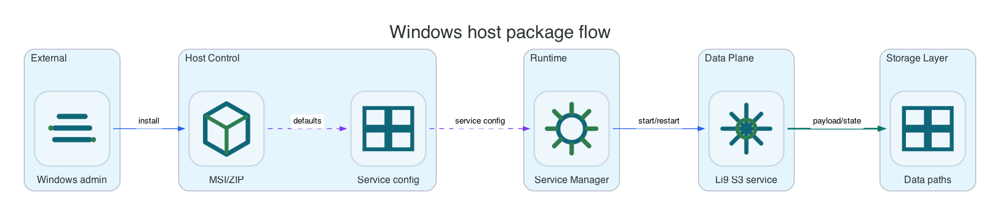

Reference / Platform / Windows
Windows host package reference.
Use this reference when MSI or ZIP artifacts install Li9 S3 onto Windows hosts and Windows Service Control Manager owns service lifecycle.
Ownership Model

| Layer | Owner | Windows Surface | Operational Rule |
|---|---|---|---|
| Package lifecycle | MSI or ZIP installer | MSI product code, PowerShell install scripts, internal artifact shares | Upgrade through signed MSI/ZIP artifacts and verify service health after each node. |
| Service lifecycle | Service Control Manager | Li9S3* Windows services | Use PowerShell service commands for start, stop, restart, and status checks. |
| Runtime configuration | Host config files | C:\ProgramData\Li9\S3\storage.yaml, TLS file paths or certificate references | Configuration management should render files consistently on every node. |
| Data and metadata | Persistent NTFS/ReFS volumes | C:\ProgramData\Li9\S3\data, metadata, wal | Volumes must survive reboot and must not be removed by uninstall unless explicitly requested. |
Host Paths And Services
| Item | Default | Purpose |
|---|---|---|
| Config directory | C:\ProgramData\Li9\S3 | Cluster config, runtime config, and TLS references. |
| Data directory | C:\ProgramData\Li9\S3\data | Object payload shards or replicated object data. |
| Metadata directory | C:\ProgramData\Li9\S3\metadata | Raft/KV state, snapshots, and product metadata. |
| WAL directory | C:\ProgramData\Li9\S3\wal | Metadata write-ahead log; prefer low-latency storage. |
| Log destination | Windows Event Log and product log directory | Service logs, audit delivery diagnostics, and package troubleshooting. |
| Main service group | Li9S3* | Gateway, metadata, object, storage-node, KMS, audit, and healing services. |
Common Commands
Get-Service Li9S3*
Get-EventLog -LogName Application -Source Li9S3* -Newest 50
& 'C:\Program Files\Li9\S3\li9-s3ctl.exe' health --config 'C:\ProgramData\Li9\S3\storage.yaml'
& 'C:\Program Files\Li9\S3\li9-s3ctl.exe' cluster members --config 'C:\ProgramData\Li9\S3\storage.yaml'